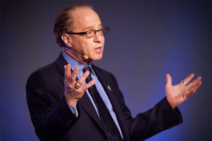
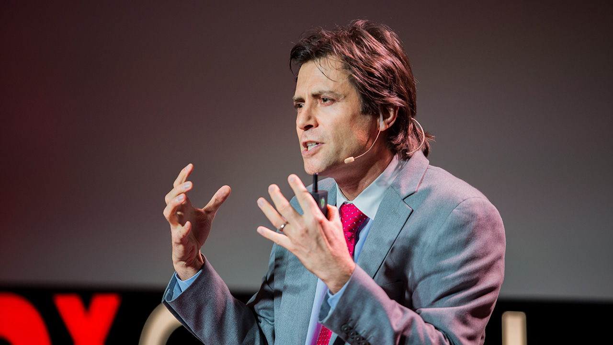
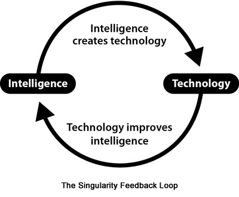
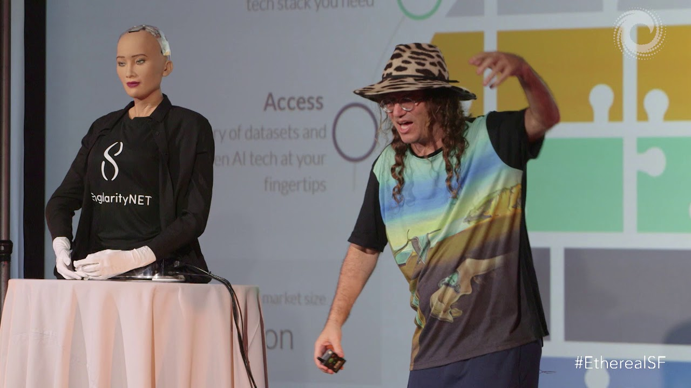
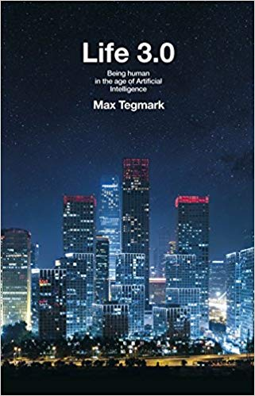
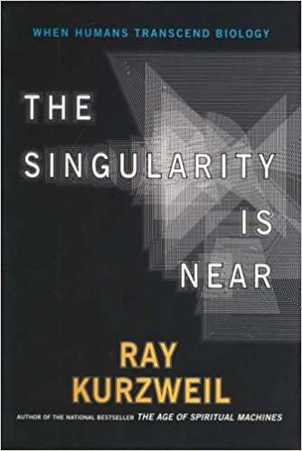
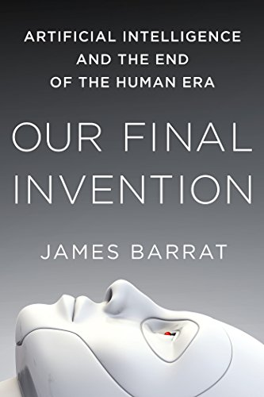
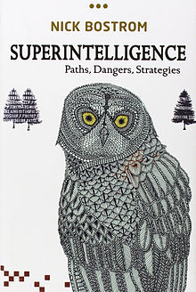

Jeg har brugt de seneste to år på at finde ud af hvad jeg gerne vil arbejde med resten af mit liv. Førhen troede jeg, at min fremtidige arbejdsplads ville være inde for finanssektoren, da jeg altid har fundet aktiehandel meget interessant. Det bliver dog kun som en hobby i fremtiden, da jeg har opdaget det jeg brænder for og vil lave resten af mit liv. Efter jeg startede i Elgiganten konkluderede jeg, at jeg ville arbejde med teknologi. Min passion for teknologi og programmering har lige siden blomstret. Jeg undersøgte de forskellige uddannelsesmuligheder. uddannelserne som fangede min interesse var "Datalogi", "Machine learning og dataviden" samt "Data Science". Min største motivation for at gennemføre en af de førnævnte uddannelser er kunstig intelligens. Siden jeg for alvor satte mig ind i begrebet kunstig intelligens, så gik det op for mig at teknologien kommer til at være det mest banebrydende menneskeligheden noglesinde kommer til at udvikle. Derefter vidste jeg, at jeg bare måtte arbejde indefor det felt. Det er dertil blevet mit livs mission at få en kandidat i datalogi med speciale i machine learning.
Nedenfor er diverse bøger & videoer som har inspireret mig og som hver dag giver mig motivation til at forfølge min drøm.
Personerne som formidlede datalogi & kunstig intelligens på en måde som virkelig fangede mig var Ray Kurzweil, Ben Gortzel og Max Tegmark. Alle tre nogle af verdens mest brilliante hjerner bag A.I. forskning & udvikling.




Ray Kurzweil og Ben Goerzel snakker begge to meget omkring den teknologiske "singularitet", som de begge to tror vi opnår inde for de næste årtier. Den teknologiske singularitet er en hypotese, hvor en kunstigt intelligent algorite overgår mennesket i intelligens, og dermed kan programmere sig selv mere effektivt end mennesket kan. Lykkedes det så kan den pro-grammere sig selv eksponentielt klogere. Hvis det sker, så kommer det til at ændre vores verden radikalt altid. Jeg spekulerer ofte over hvordan vores verden vil se ud når vi forhåbenligt i fremtiden opnår den teknologiske singularitet, hvor kunstig intelligens overtager mennesket, som værende det mest kompetente væsen på jorden. Dette tankeeksperiment giver mig utrolig meget motivation for at komme i gang med datalogi studiet. Jeg ikke kan vente med at blive ekspert i computere, matematik & pro-grammering.
Bogen handler om den påvirkning A.I. vil have på vores civilisation, og hvad kan vi gøre for at maksimere sandsynligheden for et positivt udfald
Life 3.0 af Max Tegmark, Professor på MIT
I bogen kommer han med sin begrundelse om hvorfor, at vi er tæt på den teknologiske singularitet. Han kommer med en opfølgning på bogen i 2019
The Singularity Is Near af Ray Kurzweil, Director of engineering hos Google
I Bogen lægges der meget fokus på hvor svært det bliver at kontrollere intelligent A.I. Elon Musk har udtalt, at det er en af de fem bedste bøger om fremtiden.
Our Final Invention af James Barrat, forfatter,
Superintelligence sættes i akaemisk kontekst og handler om hvad der sker med os mennesker, når vores intelligens ikke længere er den førende.
Superintelligence, Paths, Dangers, Strategies, af Nick Bostrom




Videoer om Artificial Intelligence
Jeg har set utallige videoer og hørt massevis af podcasts omhandlende A.I. Nogle udvalgte videoer og podcasts har jeg linket nedenfor, hvis det skulle være af interesse.
Sam Harris - Artificial Intelligence
2018 Issac Asimov Memorial Debate: Artificial Intelligence
Ben Goertzel: From here to Human-level AGI in 4 simple steps